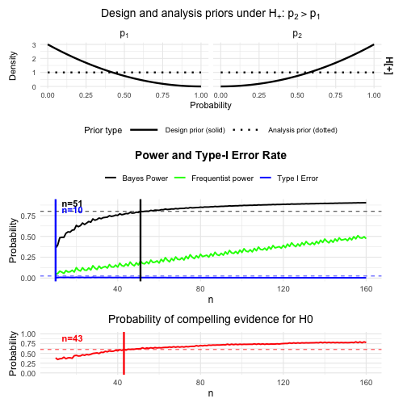

NA
Source:bfbin2arm-twostage.md
Introduction
This vignette illustrates the use of the optimal_twostage_2arm_bf() function for designing two-stage two-arm binomial phase II trials based on Bayes factors. We re-analyze a clinical trial discussed in [@kelter_power_2026] and show how to construct optimal Bayesian two-stage designs in these settings. In contrast to a one-stage design, the designs we aim for in this vignette always include an interim analysis which allows stopping the trial early for futility. Thus, the principal goal of the optimal_twostage_2arm_bf() function is to provide a calibrated Bayesian trial design for a phase II trial in terms of power and type-I-error rate (and probability of compelling evidence for the null hypothesis), which enables to stop the trial early for futility in case there is sufficient evidence for the null hypothesis of no effect or an effect too small in magnitude to be considered clinically relevant.
The workflow of finding a calibrated design proceeds as follows. For each trial we:
- Specify the design and analysis priors under the null hypothesis and the alternative hypothesis .
- Reproduce the fixed-sample (that is, one-stage) operating characteristics using the function
powertwoarmbinbf01(). This is just for comparing the one-stage sample sizes with the ones of the two-stage design which allows to stop early for futility. - Use
optimal_twostage_2arm_bf()to find an optimal two-stage design with a single interim analysis which allows to stop early for futilty and which minimizes the expected sample size under while maintaining power and controlling the Bayes-factor-based type-I-error.
Hypotheses and Bayes factors
We consider a two-arm trial with a control arm (arm 1) and a treatment arm (arm 2). Let and denote the response probabilities in the two arms. A typical hypothesis setup is:
- ,
- .
The Bayes factor compares the marginal likelihood under to that under . Small values of (e.g. or ) indicate evidence against , whereas large values (e.g. ) indicate evidence in favor of . Using the difference parameter , other typical hypothesis setups for a phase II trial are:
For details and further explanations on each of these directional tests, see [@kelter_power_2026]. The associated Bayes factors with each of these three directional tests are denoted as , and . Also, we denote and .
Priors: design vs analysis
The package distinguishes design priors used for calibrating power and type I error from analysis priors used inside the Bayes factor itself.
Design priors
Design priors describe our assumptions about the response probabilities under each hypothesis when computing operating characteristics.
Under : We assume a common response probability with set via the parameters
a_0_dandb_0_d.Under : We assume independent priors for the two arms: set via the parameters
a_1_d, b_1_d(for the control group) anda_2_d, b_2_d( for the treatment group).
For directional tests (test = "BF+0", "BF-0", or "BF+-"), there are additional design priors under a directional-null (e.g. ), specified by a_1_d_Hminus, b_1_d_Hminus, a_2_d_Hminus, b_2_d_Hminus. These are used for one-sided Bayes factors but can be set to diffuse choices (e.g. Beta(1,1)) for the symmetric test = "BF01". For details on the precise specification of these tests, see [@kelter_two_stage_2025].
Analysis priors
Analysis priors are the priors used inside the Bayes factor for each hypothesis. When the hypothesis of interest is tested via the Bayes factor, the analysis priors is the prior used in the calculation of the Bayes factor itself.
Under , the analysis prior for the common response probability again is Beta distributed, specified by the parameters
a_0_aandb_0_a.Under , we again use independent Betas for the analysis prior: specified via the parameters
a_1_a, b_1_aanda_2_a, b_2_a.
Typically, analysis priors are chosen to be relatively diffuse (e.g. Beta(1,1)), while design priors can express more specific beliefs about plausible response rates under each hypothesis. The design priors should express the assumptions or expectations about the effect the novel treatment or drug has, and is influencing the operating characteristics in the planning stage of the trial substantially. Even though the design priors can be highly subjective, it might still be possible to calibrate a design in terms of the resulting power and type-I-error rate. This way, even though the expectations about the effect of the novel drug or treatment might be quite optimistic, the design is legible from a regulatory agency’s point of view, such as the Food and Drug Administration (FDA), see [@FDA_ComplexInnovativeDesignsDecember2020] amd [@FDA_UseOfBayesianMethodologyJanuary2026] or European Medicine Agency (EMA) [@europeanmedicinesagencyICHE20Adaptive2025]. In contrast, the analysis prior should be objective in the sense that the actual test carried out at the interim and final analysis is neither in favour of the null nor the alternative hypothesis.
The function optimal_twostage_2arm_bf()
The main design function is optimal_twostage_2arm_bf(). For the Bayesian workflow considered in this vignette, the most important arguments are:
-
alpha: target Bayesian type-I error. -
beta: target Bayesian type-II error, so that the target Bayesian power is1 - beta. -
k: efficacy threshold. Evidence against the null hypothesis is declared if the Bayes factor falls belowk. -
k_f: futility threshold. Compelling evidence for the null hypothesis is declared if the Bayes factor is at leastk_f. -
n1_min: vector of length 2 giving the minimal interim sample sizes in the two arms. -
n2_max: vector of length 2 giving the maximal final sample sizes in the two arms. -
alloc1,alloc2: allocation probabilities to the two arms. -
power_cushion: optional extra power margin used in step 1 when identifying a sufficient fixed-sample design. -
pceH0: optional lower bound on the probability of compelling evidence in favour of the null hypothesis. -
interim_fraction: lower and upper bounds for the interim sample sizes, expressed as fractions of the fixed-sample sizes found in step 1. Defaults toc(0,1), which means all interim designs betweenn1_minand the fixed-sample size found in step 1 of the calibration algorithm are analyzed. If, for example,interim_fraction = c(0.25,0.75), the minimum sample size for the interim analysis starts at 25% of the fixed-sample size found in step 1 of the calibration algorithm, no matter which valuen1_mintakes. Likewise, the maximum sample size for the interim analysis point is 75% of that fixed-sample size. -
grid_step: spacing of the interim-design grid searched in step 2. -
coarse_step: spacing used in the coarse fixed-sample search in step 1. -
progress: logical; ifTRUE, prints progress messages during the search. -
max_iter: maximal number of total sample sizes explored in step 1. -
calibration_mode: calibration criterion. In this vignette we usecalibration_mode = "Bayesian"throughout. Future versions of the package will include other options such as a fully frequentist calibration and a hybrid calibration mode. -
test: Bayes-factor test"BF01","BF+0","BF-0"or"BF+-".
The function returns a list with the following main components:
-
design: vectorc(n1_1, n1_2, n2_1, n2_2)giving the interim sample sizesn1_1andn1_2and the final sample sizesn2_1andn2_2. -
naive_oc: fixed-sample operating characteristics from step 1. -
occ: corrected two-stage operating characteristics of the trial design, accounting for possible early stopping for futility. -
priors: list containing the prior specification and search settings. -
conv: convergence flag describing whether a feasible design was found. Typical values include"converged","no_feasible_fixed","no_interim_grid", and"no_feasible_design". Explanations follow below in the example. -
freq_occ: optional frequentist operating characteristics. This component is not used in the Bayesian vignette and is therefore not discussed further here. Future versions of the package will include a fully frequentist calibration, too.
In the Bayesian workflow, the corrected operating characteristics in occ are the key output, because they quantify the actual two-stage design rather than the fixed-sample surrogate found in step 1 of the calibration algorithm.
Overview of the calibration algorithm
The calibration algorithm in optimal_twostage_2arm_bf() proceeds in two steps:
Fixed-sample calibration (step 1):
It searches over total sample sizes to find a sufficient fixed-sample design that meets the target power , type-I error and (optionally) the probability of compelling evidence for the null hypothesis .Two-stage calibration (step 2):
Conditional on this fixed-sample design, it considers all admissible interim sample sizes on a grid and, for each candidate, computes the corrected operating characteristics. Among those that satisfy the constraints, it selects the design that minimizes the expected sample size under .
The number of interim designs considered in step 2 is
where each arm’s interim range is bounded below by n1_min (and interim_fraction[1] * n_2^j) and above by n_2^j - 1 (and interim_fraction[2] * n_2^j), and then discretised with grid_step. Thus, the larger the sufficient fixed-sample size found in step 1, the larger the grid of interim designs explored in step 2, and the longer the runtime.
Several modelling choices strongly influence the runtime, and we provide details below after discussing the first example. We turn to the first detailed example now, showing how to calibrate a Bayesian phase II design in practice with the function optimal_twostage_2arm_bf().
Riociguat phase II trial: fixed-sample design and optimal two-stage design
In this section we consider the Riociguat phase II trial in systemic sclerosis [@khannaRiociguatPatientsEarly2020], re-analysed in [@kelter_power_2026]. We explicitly state the response rates used in the Bayes factor design example.
Riociguat phase II trial: Setup
In the riociguat trial, the reported response rates in the two-arm binary endpoint example are
p1_riociguat <- 38/(22+38) # control arm response probability
p1_riociguat
#> [1] 0.6333333
p2_riociguat <- 48/(48+11) # treatment arm response probability
p2_riociguat
#> [1] 0.8135593as given in Section 2.5 of [@kelter_power_2026]. The response in the treatment group is higher compared to the control group, and the test we perform is versus . We thus exclude the possibility that the response probability in the control group can outperform the response probability in the treatment group. If this assumption is too optimistic, we could also perform the test of versus or the two-sided test.
Now, we use the following design and analysis priors for this example:
# flat design priors under H0 and H1 (Riociguat)
a_0_d_rio <- 1
b_0_d_rio <- 1
# slightly informative design prior under H1 (that is, H_+) for the control group
a_1_d_rio <- 1
b_1_d_rio <- 3
# slightly informative design prior under H1 (that is, H_+) for the treatment group
a_2_d_rio <- 3
b_2_d_rio <- 1
# Analysis priors under H0 and H1 (Riociguat)
a_0_a_rio <- 1 # flat under H0
b_0_a_rio <- 1
a_1_a_rio <- 1 # flat under H1 for the control group
b_1_a_rio <- 1
a_2_a_rio <- 1 # flat under H1 for the treatment group
b_2_a_rio <- 1We focus on the one-sided Bayes factor test test = "BF+0" with evidence thresholds k = 1/10 (strong evidence for efficacy) and k_f = 3 (moderate evidence to stop early for futility), compare [@kelter_power_2026]. We provide a brief discussion of choosing these thresholds below.
Riociguat phase II trial: Finding a one-stage design without an interim analysis
In the one-stage reference design used in [@kelter_power_2026] for the riociguat example, the trial uses
- patients in the control arm,
- patients in the treatment arm,
as stated in the paper. We now compute the required sample size to achieve 80% Bayesian power, 5% type-I-error rate and 80% probability of compelling evidence for the null hypothesis. However, we first do this for the one-stage design without an interim analysis. For this fixed-sample one-stage design, we require frequentist power and type-I-error rates to be computed, too, where we assume success probabilities of p1_power in the control and p2_power in the treatment group. This design is solely calibrated in terms of Bayesian power and type-I-error rate.
The design priors are chosen to be slightly informative, as we expect the treatment to be more effective than the placebo in the control group, expressed by the parameters a_1_d = a_1_d_rio and so on. The flat analysis priors are set via the parameters a_1_a = a_1_a_rio and so on. In the following code, set progress = TRUE to obtain all relevant information. It is only turned off in this vignette to avoid cluttered console output.
cat("\n--- Sample size search for riociguat-type trial ---\n")
#>
#> --- Sample size search for riociguat-type trial ---
res_rio_onestage <- ntwoarmbinbf01(
k = 1/10, k_f = 3,
power = 0.8, alpha = 0.025, pce_H0 = 0.6,
test = "BF+0",
nrange = c(10, 160), n_step = 1,
progress = FALSE,
a_0_d = a_0_d_rio, b_0_d = b_0_d_rio,
a_0_a = a_0_a_rio, b_0_a = b_0_a_rio,
a_1_d = a_1_d_rio, b_1_d = b_1_d_rio,
a_2_d = a_2_d_rio, b_2_d = b_2_d_rio,
a_1_a = a_1_a_rio, b_1_a = b_1_a_rio,
a_2_a = a_2_a_rio, b_2_a = b_2_a_rio,
compute_freq_t1e = TRUE,
p1_power = 0.4, p2_power = 0.6,
output = "plot" # Returns recommended n per group
)
We can access the resulting one-stage fixed-sample design via
res_rio_onestageif required. A more practical way is to plot the resulting design and the function always procudes a plot when being called.
The plot shows the results of the calibrated one-stage design developed by [@kelter_power_2026], and illustrates that the one-stage design without an interim analysis requires patients in total (check res_rio_onestage) to reach the desired threshold for Bayesian power, while patients in total are necessary to also reach the desired probability of compelling evidence for the null hypothesis. The (Bayesian) type-I-error rate is calibrated for even patients in total (5 per trial arm). The frequentist type-I-error rate is achieved with a supremum at 0.021 (see console output when running the above code), while the frequentist power requirement of 80% is not reached (maximum of 0.509 reached at 160 patients, see console output). Now, this one-stage design does not include an interim analysis, but is fully calibrated from a Bayesian point of view. We could also modify the parameters p1_power and p2_power to provide frequentist power calculations under more optimistic assumptions (here, we assumed about 20% less successes in both the treatment and control than the response rates actually observed in the trial, so setting p1_power = 0.6 and p2_power = 0.8 might be more realistic and yield a design which also is calibrated in terms of frequentist power then). However, we turn to finding the optimal two-stage design in the next step now, which includes an interim analysis to stop early for futility. We only computed this fixed-sample one-stage design to compare it with the two-stage design computed next.
Riociguat phase II trial: Finding the optimal Bayesian two-stage design
We now search for an optimal two-stage design that
- controls the Bayesian type I error at level
alpha = 0.025, - achieves at least power
1 - beta = 0.8, - achieves at least probability of compelling evidence
pceH0 = 0.60for the null hypothesis, - minimizes the expected total sample size under ,
- respects
n1_min = c(10, 10)andn2_max = c(80, 80), that is, the minimum number of patients in each trial arm are ten, and the maximum number of patients per trial arm are 80. - makes use of the same design and analysis priors as before. We thus use slightly informative design and flat analysis priors.
res_rio <- optimal_twostage_2arm_bf(
alpha = 0.025,
beta = 0.20,
k = 1/10,
k_f = 3,
n1_min = c(10, 10),
n2_max = c(80, 80),
alloc1 = 0.5,
alloc2 = 0.5,
power_cushion = 0.03,
pceH0 = 0.60,
interim_fraction = c(0, 1),
ncores = 1L,
grid_step = 1,
progress = TRUE,
max_iter = 500L,
compute_freq_oc = FALSE,
test = "BF+0",
a_0_d = a_0_d_rio, b_0_d = b_0_d_rio,
a_0_a = a_0_a_rio, b_0_a = b_0_a_rio,
a_1_d = a_1_d_rio, b_1_d = b_1_d_rio,
a_2_d = a_2_d_rio, b_2_d = b_2_d_rio,
a_1_a = a_1_a_rio, b_1_a = b_1_a_rio,
a_2_a = a_2_a_rio, b_2_a = b_2_a_rio
)
#> Step 1: searching for fixed-sample sufficiency (alpha=0.025, beta=0.2, cushion=0.03)...
#> Step 1: coarse fixed-sample search...
#> Coarse grid[ 1]: n_tot= 20 | n1= 10 n2= 10 | Bayes Power=0.631 | Bayes T1E=0.010 | PCE(H0)=0.449
#> Coarse grid[ 2]: n_tot= 30 | n1= 15 n2= 15 | Bayes Power=0.703 | Bayes T1E=0.008 | PCE(H0)=0.512
#> Coarse grid[ 3]: n_tot= 40 | n1= 20 n2= 20 | Bayes Power=0.751 | Bayes T1E=0.006 | PCE(H0)=0.565
#> Coarse grid[ 4]: n_tot= 50 | n1= 25 n2= 25 | Bayes Power=0.786 | Bayes T1E=0.006 | PCE(H0)=0.617
#> Coarse grid[ 5]: n_tot= 60 | n1= 30 n2= 30 | Bayes Power=0.812 | Bayes T1E=0.006 | PCE(H0)=0.646
#> Coarse grid[ 6]: n_tot= 70 | n1= 35 n2= 35 | Bayes Power=0.834 | Bayes T1E=0.006 | PCE(H0)=0.660
#> Refining fixed-sample search on [60, 70]...
#> Refine n_tot= 60 | n1= 30 n2= 30 | Bayes Power=0.812 | Bayes T1E=0.006 | PCE(H0)=0.646
#> Refine n_tot= 62 | n1= 31 n2= 31 | Bayes Power=0.819 | Bayes T1E=0.006 | PCE(H0)=0.650
#> Refine n_tot= 64 | n1= 32 n2= 32 | Bayes Power=0.822 | Bayes T1E=0.005 | PCE(H0)=0.653
#> Refine n_tot= 66 | n1= 33 n2= 33 | Bayes Power=0.829 | Bayes T1E=0.006 | PCE(H0)=0.656
#> Refine n_tot= 68 | n1= 34 n2= 34 | Bayes Power=0.833 | Bayes T1E=0.006 | PCE(H0)=0.658
#> --> Fixed-sample size found: n_tot=68 (n1=34, n2=34, Power=0.833, T1E=0.006, PCE(H0)=0.658)
#> => Parallelizing over 24 interim designs using 1 cores...
#> Step 2: evaluated 10 / 24 interim designs (41.7%)...
#> Step 2: evaluated 20 / 24 interim designs (83.3%)...
#> Step 2: evaluated 24 / 24 interim designs (100.0%)...
#> No two-stage design could be evaluated successfully.In the console output above, the line
refers to the size of the grid of all admissible pairs for the interim analysis.
In this example, step 1 finds a fixed-sample one-stage design with . With
the interim sample size in each arm is allowed to range from 10 up to 33 (because the interim look must occur strictly before the final sample size). In principle this would yield
- ,
- ,
so a full grid of candidate interim designs. Internally, the function filters this grid to the subset of pairs that are compatible with the search settings and can be meaningfully evaluated, which is why the final message reports that it is parallelizing over 24 interim designs in this run. If we had chosen interim_fraction = c(0.25, 0.75), the admissible sample sizes for the interim analysis would have been set to 25 and 75 percent of the maximum sample size n2_max. This serves primarily, when the interim analysis should not be too early or too late, and to improve the runtime, when the number of interim designs is very large.
The object res_rio contains both the fixed-sample quantities used in step 1 and the corrected two-stage operating characteristics of the final design.
-
res_rio$designis a four-element vectorc(n1_1, n1_2, n2_1, n2_2)that describes the optimal two-stage design. In this example the function returnsres_rio$design #> 13 13 34 34so the interim sample sizes are and the final sample sizes are .
The maximum total sample size of the optimal design is therefore [ N_{} = n_2^{(1)} + n_2^{(2)} = 68, ] while the interim sample size (when the interim analysis is carried out) is [ N_{} = n_1^{(1)} + n_1^{(2)} = 26. ]
-
res_rio$naive_ocsummarizes the fixed-sample operating characteristics of the sufficient one-stage design identified in step 1:res_rio$naive_oc #> $n1 #> 34 #> #> $n2 #> 34 #> #> $power #> 0.8330918 #> #> $t1e #> 0.005841484 #> #> $pceH0 #> 0.6581456These operating characteristics are less relevant for the optimal two-stage design, but are used internally by the calibration algorithm in step 1. Also, the comparison of sample sizes shows that we essentially find the same sample size when using a one-stage design to fulfill our requirements on Bayesian power, type-I-error rate and probability of compelling evidence. Thus, the introduction of an interim analysis to stop the trial early for futility comes for free (in this specific example, not in general).
-
res_rio$occcontains the corrected operating characteristics of the optimal two-stage design:res_rio$occ #> Power Type1_Error CE_H0 futility_prob E_H0_N #> 0.833091774 0.005841484 0.675826298 0.020654827 67.132497270Here:
-
Poweris the Bayesian power under the design prior, accounting for possible early stopping for futility. -
Type1_Erroris the corrected Bayesian type-I error under the design prior for . -
CE_H0is the corrected probability of obtaining compelling evidence in favour of (either at interim or at the final analysis). -
futility_probis the probability of early stopping for futility under . -
E_H0_Nis the expected total sample size under , taking the futility probability into account.
-
res_rio$convindicates whether a feasible design satisfying the specified Bayesian constraints was found in the search region. In this example the convergence flag equals"converged".
In summary, res_rio$design tells us how many patients are recruited in each arm at the interim and at the final analysis, and res_rio$occ reports the corresponding operating characteristics of this optimal two-stage design.
We can also plot the resulting design’s operating characteristics:
plot_twostage_2arm_bf(res_rio)
#> Error in plot_twostage_2arm_bf(res_rio): res$design must be a valid four-element design vector.The plot also visualizes our expectations about the effect of the drug. The design priors indicate that smaller response probabilities close to zero are much more likely a priori in the control group than in the treatment group, whereas larger response probabilities are more likely in the treatment group (compare the dashed and solid lines in the bottom panel for the design prior under , was the success probability in the control arm and the success probability in the treatment arm). This expectation about the effectiveness of the new treatment is independent of the analysis priors used when computing the Bayes factor , which are flat and in that sense objective (compare the dashed and solid lines in the analysis prior panels, which overlap; therefore, under it looks as if only a single line is in the plot): subjectivity only enters the planning stage of the trial, not the interim or final analysis itself.
Comparison with the fixed-sample design
Before considering the two-stage design, it is useful to look again at the corresponding one-stage fixed-sample design that we calibrated earlier directly to the target Bayesian operating characteristics. For the riociguat example, the function ntwoarmbinbf01() with power = 0.8, alpha = 0.025 and pce_H0 = 0.6 identifies a fixed-sample one-stage design with (N_{} = 51) patients in total (about 26 patients per arm). At this sample size the Bayesian power is approximately (0.80), the Bayesian type-I error under (H_0) is about (0.007), and the probability of obtaining compelling evidence in favour of (H_0) is about (0.62). These values correspond to the row in the fixed-sample calibration console output above in Section 6.2, when setting progress = TRUE in the function call.
The optimal two-stage design returned by optimal_twostage_2arm_bf() for the same calibration targets uses larger final sample sizes, (n_2^{(1)} = n_2^{(2)} = 34), so that the maximum total sample size is (N_{} = 68). However, it introduces an interim analysis at ((n_1^{(1)}, n_1^{(2)}) = (13, 13)) with the option to stop early for futility under (H_0). The corrected two-stage operating characteristics of this design are close to the one-stage targets: the Bayesian power is again about (0.80), the corrected Bayesian type-I error under (H_0) is about (0.006), and the corrected probability of compelling evidence in favour of (H_0) is approximately (0.60). At the same time, the two-stage design stops early for futility under (H_0) with probability about (0.02), which reduces the expected total sample size under (H_0) from 68 in the corresponding one-stage design to roughly (E_{H_0}N ).
The following table summarizes the key Bayesian operating characteristics of the fixed-sample one-stage design at (N_{} = 51) and of the optimal two-stage design with interim look at ((n_1^{(1)}, n_1^{(2)}) = (13, 13)) and maximum total sample size (N_{} = 68).
Interpretation of the small futility probability
In the riociguat example, the optimal two-stage design only stops early for futility under (H_0) with probability about (0.02), so the reduction in the expected sample size under (H_0) is very modest. This behaviour is not a bug of the algorithm, but a consequence of the modelling choices and calibration constraints.
First, the design is calibrated to fairly strict evidence requirements: the success threshold (k = 1/10), the null-evidence threshold (k_f = 3), the Bayesian type-I error bound (= 0.025), and the requirement ((H_0) ) together imply that only a small fraction of (H_0) outcomes can be eliminated safely at the interim look without compromising either power or the probability of compelling evidence in favour of (H_0). Under such constraints, the interim boundary cannot be very aggressive, so the early stopping probability under (H_0) remains low and (E_{H_0}(N)) stays close to the maximum sample size.
Second, even when the interim fraction is moved and the CE((H_0)) target is varied, the futility probability in this example is relatively insensitive as long as the thresholds (k) and (k_f) and the overall calibration targets remain fixed. Moving the interim later increases the information available at the interim, but the futility rule still has to preserve about 80% Bayesian power and the CE((H_0)) constraint, which limits how many null paths can be stopped early. In particular, with (k_f = 3) already fairly liberal for declaring strong evidence in favour of (H_0), further gains in early stopping would require relaxing this threshold in a way that is not clinically desirable here.
Third, the design priors have a pronounced effect on the expected sample size under (H_0). When the design priors under (H_1^+) are made more informative and more clearly separated from (H_0), the predictive distributions under (H_0) and (H_1^+) diverge more quickly as the sample size grows. This leads to a smaller sufficient fixed-sample size and, consequently, to a smaller expected sample size under (H_0) in the corresponding two-stage design, even if the interim futility probability itself changes only marginally. In the riociguat example, this can be achieved by concentrating the design priors slightly more around the clinically relevant success rates, while keeping the analysis priors and Bayes factor thresholds unchanged.
To illustrate this effect, consider a modified design where the analysis priors are left as in the original example, but the design priors under (H_1^+) are made more informative, with ((1, 5)) for the control arm and ((5, 1)) for the experimental arm. Using the call
res_rio_more_informative_design_priors <- optimal_twostage_2arm_bf(
alpha = 0.025,
beta = 0.20,
k = 1/10,
k_f = 3,
n1_min = c(10, 10),
n2_max = c(80, 80),
alloc1 = 0.5,
alloc2 = 0.5,
power_cushion = 0.03,
pceH0 = 0.60,
interim_fraction = c(0.25, 0.9),
grid_step = 1,
progress = TRUE,
max_iter = 500L,
compute_freq_oc = FALSE,
test = "BF+0",
a_0_d = a_0_d_rio, b_0_d = b_0_d_rio,
a_0_a = a_0_a_rio, b_0_a = b_0_a_rio,
a_1_d = 1, b_1_d = 5,
a_2_d = 5, b_2_d = 1,
a_1_a = a_1_a_rio, b_1_a = b_1_a_rio,
a_2_a = a_2_a_rio, b_2_a = b_2_a_rio
)
#> Step 1: searching for fixed-sample sufficiency (alpha=0.025, beta=0.2, cushion=0.03)...
#> Step 1: coarse fixed-sample search...
#> Coarse grid[ 1]: n_tot= 20 | n1= 10 n2= 10 | Bayes Power=0.815 | Bayes T1E=0.010 | PCE(H0)=0.449
#> Coarse grid[ 2]: n_tot= 30 | n1= 15 n2= 15 | Bayes Power=0.870 | Bayes T1E=0.008 | PCE(H0)=0.512
#> Coarse grid[ 3]: n_tot= 40 | n1= 20 n2= 20 | Bayes Power=0.905 | Bayes T1E=0.006 | PCE(H0)=0.565
#> Coarse grid[ 4]: n_tot= 50 | n1= 25 n2= 25 | Bayes Power=0.925 | Bayes T1E=0.006 | PCE(H0)=0.617
#> Refining fixed-sample search on [40, 50]...
#> Refine n_tot= 40 | n1= 20 n2= 20 | Bayes Power=0.905 | Bayes T1E=0.006 | PCE(H0)=0.565
#> Refine n_tot= 42 | n1= 21 n2= 21 | Bayes Power=0.910 | Bayes T1E=0.006 | PCE(H0)=0.578
#> Refine n_tot= 44 | n1= 22 n2= 22 | Bayes Power=0.919 | Bayes T1E=0.007 | PCE(H0)=0.584
#> Refine n_tot= 46 | n1= 23 n2= 23 | Bayes Power=0.926 | Bayes T1E=0.007 | PCE(H0)=0.602
#> --> Fixed-sample size found: n_tot=46 (n1=23, n2=23, Power=0.926, T1E=0.007, PCE(H0)=0.602)
#> => Parallelizing over 11 interim designs using 9 cores...
#> Step 2: evaluated 10 / 11 interim designs (90.9%)...
#> Step 2: evaluated 11 / 11 interim designs (100.0%)...
#> No two-stage design could be evaluated successfully.
plot_twostage_2arm_bf(res_rio_more_informative_design_priors)
#> Error in plot_twostage_2arm_bf(res_rio_more_informative_design_priors): res$design must be a valid four-element design vector.the fixed-sample calibration in step 1 now finds a sufficient one-stage design with (n_2^{(1)} = n_2^{(2)} = 23) (i.e. (N_{} = 46)), with Bayesian power about (0.926), Bayesian type-I error about (0.007), and ((H_0) ). Conditional on this fixed-sample anchor, the optimal two-stage design has interim and final sample sizes
[ (n_1^{(1)}, n_1^{(2)}, n_2^{(1)}, n_2^{(2)}) = (11, 11, 23, 23), ]
with corrected Bayesian operating characteristics
[ ( H_0 H_1^+) , ( H_0 H_0) , ( H_0) , ]
and an early futility stop probability under (H_0) of about (0.020). The expected total sample size under (H_0) is reduced to
[ E_{H_0}N , ]
which is now substantially smaller than the maximum sample size (N_{} = 46) and also smaller than in the original riociguat example. This illustrates that, in this family of designs, meaningful gains in efficiency are driven primarily by how informative and well-separated the design priors are under (H_0) and (H_1^+), rather than by aggressive changes to the interim timing or thresholds, which would otherwise conflict with the desired power and evidence constraints. It is important to stress that choosing a slightly more informative design prior under does not introduce any form of subjectivity in the eventual analysis carried out when the trial data are available: The analysis priors used in the Bayes factors remain flat and in that sense objective. The only thing that changes is our a priori expectation about the effect of the treatment or drug to a slightly more optimistic assumption (compare the design prior panels for in the two function calls above, in the last one the priors separate the hypotheses slightly stronger from another).
Interpretation of the conv flag
The component conv in the output of optimal_twostage_2arm_bf() summarizes how the calibration algorithm terminated.
"converged"
A fully feasible design was found: step 1 identified a fixed-sample design that meets the Bayesian constraints, and step 2 found at least one two-stage design on the interim grid whose corrected operating characteristics satisfy the specified targets. The returned design is the one that minimizes the expected sample size under among all such candidates."no_feasible_fixed"
Step 1 could not find any fixed-sample design (within the range implied byn1_min,n2_max,max_iter, and the thresholds) that satisfies the Bayesian constraints. In this case step 2 is not entered at all, because there is no “sufficient” one-stage design to base a two-stage search on. Typical remedies are to relax the constraints (e.g. increasealpha, relaxpceH0, or reduce1 - beta) or to increasen2_maxandmax_iter."no_interim_grid"
A fixed-sample design was found in step 1, but the admissible interim-sample region implied byn1_min,n2_max, andinterim_fractionis empty. In other words, there is no pair that both lies strictly below and satisfies the interim-range constraints. In this case the algorithm cannot construct any two-stage candidates. Adjustingn1_minor wideninginterim_fractionusually resolves this."no_feasible_design"
Both step 1 and step 2 ran, and at least one interim grid was evaluated, but no two-stage design on that grid satisfies the specified constraints on power, type-I error, and (optionally)pceH0. The function returnsNAfor the design and corrected operating characteristics in this case. To obtain a feasible design, one can enlarge the search space (e.g. increasen2_maxor allow a finer grid viagrid_step) or relax the Bayesian constraints.
How priors and thresholds affect the calibration grid (and runtime)
Design priors and required sample size
The design priors under and determine how quickly the Bayes factor accumulates evidence as increases.
Flat design priors (e.g. everywhere) spread substantial prior mass over a wide range of response rates. Under such diffuse priors, the Bayes factor tends to move more slowly away from 1, and the algorithm typically needs a larger fixed-sample size in step 1 to achieve the desired power and type-I error under the design priors. We strongly discourage using flat priors solely for the sake of staying objective, in particular, because the design priors do not influence the results of the Bayes factor. This is the job of the analysis prior in the planning of a trial and here, we encourage using uninformative or flat analysis priors.
More informative design priors that concentrate mass near clinically plausible values can lead to smaller sufficient fixed-sample sizes, because the predictive distributions under and separate more quickly.
Because a larger fixed-sample size directly expands the admissible range for , using very flat design priors can lead to a very large interim design grid in step 2 and thus considerably longer runtimes.
A simple (non-evaluated) example illustrating the “flat vs informative” effect is:
# NOT RUN
# Very flat design priors (tend to require larger n2)
res_flat <- optimal_twostage_2arm_bf(
alpha = 0.025, beta = 0.20, pceH0 = 0.60,
k = 1/10, k_f = 3,
n1_min = c(5, 5), n2_max = c(200, 200),
alloc1 = 0.5, alloc2 = 0.5,
interim_fraction = c(0, 1),
grid_step = 1,
power_cushion = 0.03,
progress = TRUE,
max_iter = 2000,
test = "BF+0",
a_0_d = 1, b_0_d = 1,
a_0_a = 1, b_0_a = 1,
a_1_d = 1, b_1_d = 1,
a_2_d = 1, b_2_d = 1,
a_1_a = 1, b_1_a = 1,
a_2_a = 1, b_2_a = 1
)
# More informative design priors (likely smaller n2, fewer interim designs)
# res_inf <- optimal_twostage_2arm_bf(
# alpha = 0.025, beta = 0.20, pceH0 = 0.60,
# k = 1/10, k_f = 3,
# n1_min = c(5, 5), n2_max = c(200, 200),
# alloc1 = 0.5, alloc2 = 0.5,
# interim_fraction = c(0, 1),
# grid_step = 1,
# power_cushion = 0.03,
# progress = TRUE,
# max_iter = 2000,
# test = "BF+0",
# a_0_d = a_0_d_rio, b_0_d = b_0_d_rio,
# a_0_a = a_0_a_rio, b_0_a = b_0_a_rio,
# a_1_d = a_1_d_rio, b_1_d = b_1_d_rio,
# a_2_d = a_2_d_rio, b_2_d = b_2_d_rio,
# a_1_a = a_1_a_rio, b_1_a = b_1_a_rio,
# a_2_a = a_2_a_rio, b_2_a = b_2_a_rio
# )In practice, one can expect res_flat to require a larger fixed-sample size in step 1, and hence to explore more interim designs in step 2, than a corresponding design based on more concentrated priors.
Evidence threshold and required sample size
The efficacy threshold determines how strong the evidence against must be before declaring success. For BF+0, success corresponds to the event “Bayes factor in favour of vs drops below ”.
If is very small (e.g. ), then very strong evidence is required to reject . This typically forces the algorithm to choose larger fixed-sample sizes to reach the desired power.
If is less extreme (e.g. ), the evidence threshold is easier to reach, so smaller fixed-sample sizes can be sufficient.
Since the fixed-sample size from step 1 determines the upper bound for the interim sample sizes, choosing a larger (less stringent) tends to reduce the number of interim designs and the runtime of the calibration procedure; choosing a smaller has the opposite effect.
A simple illustration (not evaluated in the vignette) is:
# NOT RUN
# More stringent evidence threshold (k = 1/10)
res_strict <- optimal_twostage_2arm_bf(
alpha = 0.025, beta = 0.20, pceH0 = 0.60,
k = 1/10, k_f = 3,
n1_min = c(5, 5), n2_max = c(150, 150),
alloc1 = 0.5, alloc2 = 0.5,
interim_fraction = c(0, 1),
grid_step = 1,
power_cushion = 0.03,
progress = TRUE,
max_iter = 2000,
test = "BF+0",
a_0_d = a_0_d_rio, b_0_d = b_0_d_rio,
a_0_a = a_0_a_rio, b_0_a = b_0_a_rio,
a_1_d = a_1_d_rio, b_1_d = b_1_d_rio,
a_2_d = a_2_d_rio, b_2_d = b_2_d_rio,
a_1_a = a_1_a_rio, b_1_a = b_1_a_rio,
a_2_a = a_2_a_rio, b_2_a = b_2_a_rio
)
# Less stringent evidence threshold (k = 1/3)
# res_looser <- optimal_twostage_2arm_bf(
# alpha = 0.025, beta = 0.20, pceH0 = 0.60,
# k = 1/3, k_f = 3,
# n1_min = c(5, 5), n2_max = c(150, 150),
# alloc1 = 0.5, alloc2 = 0.5,
# interim_fraction = c(0, 1),
# grid_step = 1,
# power_cushion = 0.03,
# progress = TRUE,
# max_iter = 2000,
# test = "BF+0",
# a_0_d = a_0_d_rio, b_0_d = b_0_d_rio,
# a_0_a = a_0_a_rio, b_0_a = b_0_a_rio,
# a_1_d = a_1_d_rio, b_1_d = b_1_d_rio,
# a_2_d = a_2_d_rio, b_2_d = b_2_d_rio,
# a_1_a = a_1_a_rio, b_1_a = b_1_a_rio,
# a_2_a = a_2_a_rio, b_2_a = b_2_a_rio
# )Here, one would expect res_strict to require a larger fixed-sample size and thus more interim designs than res_looser.
Probability of compelling evidence for and feasibility
The optional constraint on (specified via pceH0) is evaluated under and requires a sufficiently large sample size for the Bayes factor to accumulate strong evidence in favour of . For small total sample sizes:
It may be impossible to reach the desired
pceH0(even with favourable data), because the Bayes factor cannot move far enough towards when is small.In such cases, the fixed-sample search in step 1 will typically continue to larger in an attempt to meet the
pceH0constraint. Ifn2_maxis restrictive, it may ultimately fail to find a design that satisfies all constraints.
This leads to an important tension:
Smaller sufficient fixed-sample sizes (e.g. from a less stringent ) make the step-2 search faster but can make it hard (or impossible) to reach a demanding
pceH0(such as 0.8 or 0.9), because there simply is not enough information in the data to strongly favour .Larger fixed-sample sizes (e.g. from stricter priors or smaller ) make satisfying
pceH0more feasible but increase the number of interim designs and thus the runtime.
A minimal illustration that emphasises feasibility (not evaluated) could look like:
# NOT RUN
# Modest P(CE|H0) target
res_ce60 <- optimal_twostage_2arm_bf(
alpha = 0.025, beta = 0.20, pceH0 = 0.60,
k = 1/10, k_f = 3,
n1_min = c(5, 5), n2_max = c(120, 120),
alloc1 = 0.5, alloc2 = 0.5,
interim_fraction = c(0, 1),
grid_step = 1,
power_cushion = 0.03,
progress = TRUE,
max_iter = 2000,
test = "BF+0",
a_0_d = a_0_d_rio, b_0_d = b_0_d_rio,
a_0_a = a_0_a_rio, b_0_a = b_0_a_rio,
a_1_d = a_1_d_rio, b_1_d = b_1_d_rio,
a_2_d = a_2_d_rio, b_2_d = b_2_d_rio,
a_1_a = a_1_a_rio, b_1_a = b_1_a_rio,
a_2_a = a_2_a_rio, b_2_a = b_2_a_rio
)
# More demanding P(CE|H0) target (may require larger n2 or even be infeasible)
# res_ce80 <- optimal_twostage_2arm_bf(
# alpha = 0.025, beta = 0.20, pceH0 = 0.80,
# k = 1/10, k_f = 3,
# n1_min = c(5, 5), n2_max = c(120, 120),
# alloc1 = 0.5, alloc2 = 0.5,
# interim_fraction = c(0, 1),
# grid_step = 1,
# power_cushion = 0.03,
# progress = TRUE,
# max_iter = 2000,
# test = "BF+0",
# a_0_d = a_0_d_rio, b_0_d = b_0_d_rio,
# a_0_a = a_0_a_rio, b_0_a = b_0_a_rio,
# a_1_d = a_1_d_rio, b_1_d = b_1_d_rio,
# a_2_d = a_2_d_rio, b_2_d = b_2_d_rio,
# a_1_a = a_1_a_rio, b_1_a = b_1_a_rio,
# a_2_a = a_2_a_rio, b_2_a = b_2_a_rio
# )The second call with pceH0 = 0.80 may either force n2 to become quite large or, if n2_max is too restrictive, result in conv = "no_feasible_fixed".
Practical recommendation for vignettes and examples
When using the optimal_twostage_2arm_bf() function for designing two-stage two-arm binomial phase II trials based on Bayes factors, it is useful to:
- Choose moderately informative design priors rather than completely flat ones.
- Avoid extremely stringent evidence thresholds and
pceH0targets for demonstration code. - Use relatively modest
n2_maxand, if needed, a coarsergrid_step(e.g. 2 or 3) to keep the number of interim designs manageable.
This keeps runtime under control.
Summary
This vignette demonstrated how to
- specify design and analysis priors for two-arm binomial Bayes factor designs,
- reproduce fixed-sample operating characteristics for given trial settings, and
- construct optimal two-stage designs that reduce the expected sample size under while maintaining power and controlling Bayes-factor-based type I error,
- interpret the output of the two-stage optimal design algorithm, in particular, the convergence flag,
- balance computational runtime and the choice of evidence thresholds and for efficacy and futility, the choice of design priors, and the probability of compelling evidence target constraints
By adjusting the prior parameters, Bayes factor thresholds, and sample size constraints, bfbin2arm can be tailored to a wide range of two-arm phase II trial settings. Additional vignettes on frequentist and hybrid calibration will be added in future releases of the package, once these features are implemented.